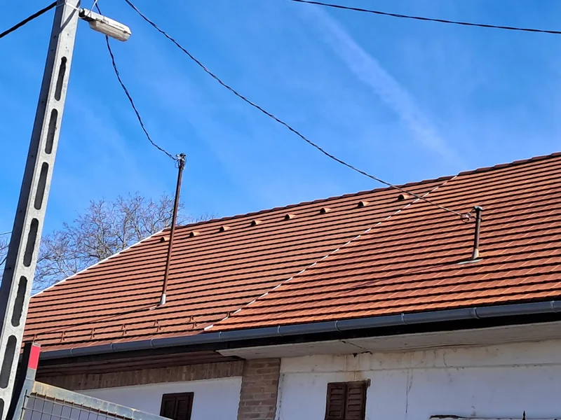

Új fedés, megújuló tető.
Tetőfedés és fedéscsere az épülethez igazítva. Az egyeztetéshez hasznos a meglévő fedés típusa, a tető hozzávetőleges mérete és néhány áttekintő fotó.
Tetőfedési munkák ↗BUDAPEST · XXII. KERÜLET
Tetőfedés, ereszaljburkolat és ácsmunkák Budafok-Tétény területén. Nézze meg saját, XXII. kerületi munkánkat, és egyeztessen Bokrodi Jánossal a tervezett feladatról.
Kiszállás, felmérés és vállalási időpont előzetes egyeztetéssel.

04 / SAJÁT HELYI REFERENCIA · 7 FOTÓ
A Budapest XXII. kerületében végzett munkáról a tető cserepezését és az eresz alatti faburkolat szerelését bemutató fotók készültek. Az albumon az állványról végzett burkolás, az ereszcsatorna melletti részletek és a munkaterület környezete is megtekinthető.
Érd, Budaörs, Százhalombatta, Adony, Biatorbágy és Ráckeresztúr.
AMIBEN SEGÍTHETÜNK
Tetőfedés és fedéscsere az épülethez igazítva. Az egyeztetéshez hasznos a meglévő fedés típusa, a tető hozzávetőleges mérete és néhány áttekintő fotó.
Tetőfedési munkák ↗Fa tetőszerkezet építése, javítása és cseréje. Felújításnál a meglévő faelemek állapotát, új építésnél a tervet és a csatlakozásokat kell áttekinteni.
Ácsmunkák részletesen ↗Kerti kiülők és pavilonok az elképzelt használathoz. Gondolja át a méretet, az elhelyezést, a fedést és a munkaterület megközelíthetőségét.
Kerti kiülők ↗Egy- vagy többállásos fa kocsibeállók. Az autók száma mellett a beállási irány, az oszlopok helye, a szabad magasság és a vízelvezetés is számít.
Fa kocsibeállók ↗EGYEZTETÉS ELŐTT
Tetőfedésnél mondja el a meglévő fedés típusát és a tető becsült méretét. Ereszaljburkolatnál az eresz hossza, szélessége, magassága és a meglévő burkolat állapota is fontos.
A kerület mellett adja meg a pontos helyszínt és az udvar megközelíthetőségét. Jelezze, ha az állvány elhelyezése vagy az anyagok bejuttatása külön egyeztetést igényel.
A földről biztonságosan készített áttekintő fotók segíthetik az első megbeszélést. A pontos műszaki tartalmat, az anyagokat és az árat a feladat ismeretében egyeztetjük.
Árlista és árazási szempontok ↗BESZÉLJÜK ÁT A RÉSZLETEKET
Híváskor mondja el a pontos helyszínt és a tervezett munkát. A kiszállást, a felmérést és a vállalási időpontot egyeztetjük.